NCERT Solutions for Class 12 Physics Chapter 9 Ray Optics and Optical Instruments are part of NCERT Solutions for Class 12 Physics. Here we have given NCERT Solutions for Class 12 Physics Chapter 9 Ray Optics and Optical Instruments.
Topics and Subtopics in NCERT Solutions for Class 12 Physics Chapter 9 Ray Optics and Optical Instruments:
| Section Name | Topic Name |
| 9 | Ray Optics and Optical Instruments |
| 9.1 | Introduction |
| 9.2 | Reflection of Light by Spherical Mirrors |
| 9.3 | Refraction |
| 9.4 | Total Internal Reflection |
| 9.5 | Refraction at Spherical Surfaces and by Lenses |
| 9.6 | Refraction through a Prism |
| 9.7 | Dispersion by a Prism |
| 9.8 | Some Natural Phenomena due to Sunlight |
| 9.9 | Optical Instruments |
NCERT Solutions for Class 12 Physics Chapter 9 Ray Optics and Optical Instruments
Question 1.
A small candle, 2.5 cm in size is placed at 27 cm in front of a concave mirror of radius of curvature 36 cm. At what distance from the mirror should a screen be placed in order to obtain a sharp image? Describe the nature and size of the image. If the candle is moved closer to the mirror, how would the screen have to be moved?
Solution:
The object is kept between ƒ and C. So the image should be real, inverted and beyond C. To locate the sharp image, screen should be placed at the position of image.
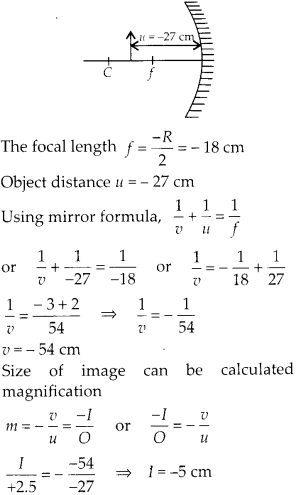
So, the image is inverted and magnified. Thus in order to locate the sharp image, the screen should be kept 54 cm in front of concave mirror and image on the screen will be observed real, inverted and magnified. If the candle is moved closer to the mirror, the real image will move away from the mirror, hence screen has to be shifted away from the mirror to locate the sharp image.
Question 2.
A 4.5 cm needle is placed 12 cm away from a convex mirror of focal length 15 cm. Give the location of the image and the magnification. Describe what happens as the needle is moved farther from the mirror.
Solution:
A convex mirror always form virtual image, which is erect and small in size of an object kept in front of it. Focal length of convex mirror ƒ = + 15 cm Object distance u = – 12 cm Using mirror formula
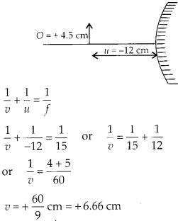
Therefore, image is virtual, formed at 6.67 cm at the back of the mirror.
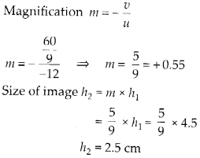
It shows the image is erect, small in size and virtual. When the needle is moved farther from mirror the image also move towards focus and decreasing in size. As u approaches v approaches focus but never beyond ƒ.
Question 3.
A tank is filled with water to a height of 12.5 cm. The apparent depth of a needle lying at the bottom of the tank is measured by a microscope to be 9.4 cm. What is the refractive index of water? If water is replaced by a liquid of refractive index 1.63 upto the same height, by what distance would the microscope have to be moved to focus on the needle again?
Solution:
We know the relation
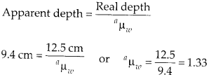
Now if the water is replaced by other liquid, the apparent depth will change and microscope will have to be further moved to focus the image. With new liquid
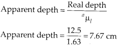
Now the microscope will have to shift from its initial position to focus on the needle again which is at 7.67 cm depth. Shift distance = 9.4 – 7.67 = 1.73 cm.
Question 4.
Figures (a) and (b) show refraction of a ray in air incident at 60° with the normal to a glass- air and water-air interface, respectively. Predict the angle of refraction in glass when the angle of incidence in water is 45° with the normal to a water-glass interface (figure c).
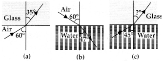
Solution:
(a) Applying Snell’s law for the refraction from air to glass. Refractive index of glass w.r.t. air
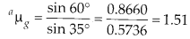
(b) Now Snell’s law for the refraction from air to water
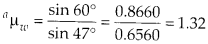
(c) Now the light beam is incident at an angle 45° from water to glass
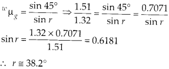
Question 5.
A small bulb is placed at the bottom of a tank containing water to a depth of 80 cm. What is the area of the surface of water through which light from the bulb can emerge out? Refractive index of water is 1.33. (Consider the bulb to be a point source)
Solution:
As shown in the figure all those light rays which are incident on the surface at angle of incidence more than critical angle, does total internal reflection and are reflected back in water only. All those light rays which are incident below critical angle emerges out of surface bending away from normal. All those light beams which are incident at critical angle grazes the surface of water.
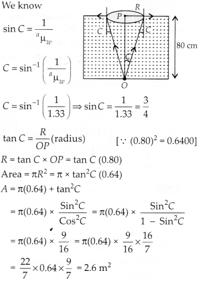
Question 6.
A prism is made of glass of unknown refractive index. A parallel beam of light is incident on a face of the prism. The angle of minimum deviation is measured to be 40°. What is the refractive index of the material of the prism? The refracting angle of the prism is 60°. If the prism is placed in water (refractive index 1.33), predict the new angle of minimum deviation of a parallel beam of light.
Solution:
When the light beam is incident from air on to the glass prism, the angle of minimum deviation is 40°. Refractive index of glass w.r.t. air.
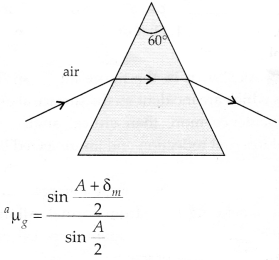
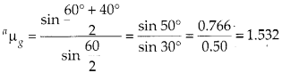
Now the prism is placed in water, new angle of minimum deviation can be calculated.
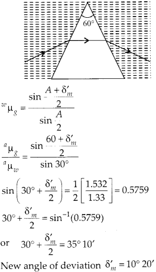
Question 7.
Double-convex lenses are to be manufactured from a glass of refractive index 1.55, with both faces of the same radius of curvature. What is the radius of curvature required if the focal length is to be 20 cm?
Solution:
Both faces should be of same radius of curvature
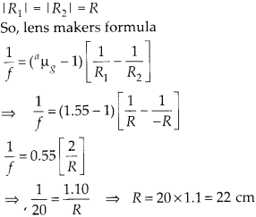
So, the radius of curvature should be 22 cm for each face of lens.
Question 8.
A beam of light converges at a point P. Now a lens is placed in the path of the convergent beam 12 cm from P. At what point does the beam converge if the lens is
(a) a convex lens of focal length 20 cm, and
(b) a concave lens of focal length 16 cm?
Solution:
(a) The convex lens is placed in the path of convergent beam.
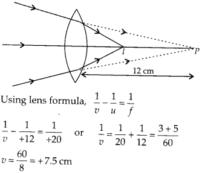
The image 1 is formed by further converging beams at a distance of 7.5 cm from lens.
(b) A concave lens is placed in the path of convergent’ beam, the concave lens further diverge the light.
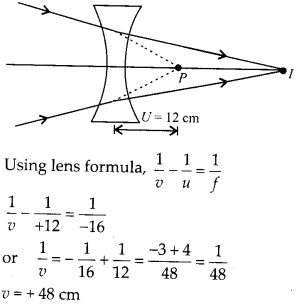
The image I is formed by diverged rays at 48 cm away from concave lens.
Question 9.
An object of size 3.0 cm is placed 14 cm in front of a concave lens of focal length 21 cm. Describe the image produced by the lens. What happens if the object is moved further away from the lens?
Solution:
Object of size 3 cm is placed 14 cm in front of concave lens.
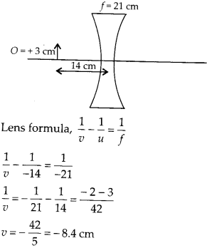
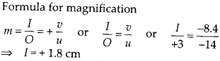
So, the image is virtual, erect, of the size 1.8 cm and is located 8.4 cm from the lens on the same side as object. As the object is moved away from the lens, the virtual image moves towards the focus of the lens but never beyond it. The image also reduces in size as shift towards focus.
Question 10.
What is the focal length of a convex lens of focal length 30 cm in contact with a concave lens of focal length 20 cm? Is the system a converging or a diverging lens? Ignore thickness of the lenses.
Solution:
Equivalent focal length of the combination
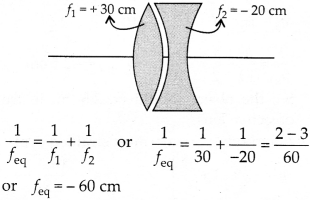
Hence, system will behave as a diverging lens of focal length 60 cm.
Question 11.
A compound microscope consists of an objective lens of focal length 2.0 cm and an eyepiece of focal length 6.25 cm separated by a distance of 15 cm. How far from the objective should an object be placed in order to obtain the final image at (a) the least distance of distinct vision (25 cm), and (b) at infinity? What is the magnifying power of the microscope in each case?
Solution:
(a) We want the final image at least distance of distinct vision. Let the object in front of objective is at distance υ0.
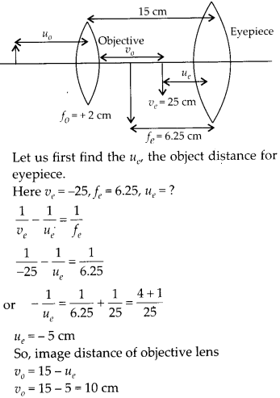
Now we can get required position of object in point of objective.
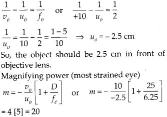
(b) We want the final image at infinity. Let us again assume the object in front of objective at distance υ0.
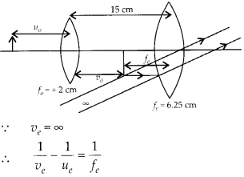
The object distance υe for the eyepiece should be equal to ƒe = 6.25 cm to obtain final image at ∞. So, image distance of objective lens
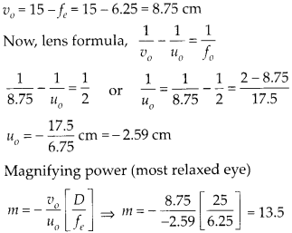
Question 12.
A person with a normal near point (25 cm) using a compound microscope with objective of focal length 8.0 mm and an eyepiece of focal length 2.5 cm can bring an object placed at 9.0 mm from the objective in sharp focus. What is the separation between the two lenses? Calculate the magnifying power of the microscope.
Solution:
The image is formed at least distance of distinct vision for sharp focus. The separation between two lenses will be υ0 + |υe|
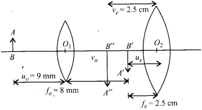
Let us find first υ0 the image distance for objective lens.
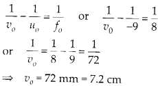
Also we can find object distance for eyepiece υe as we know
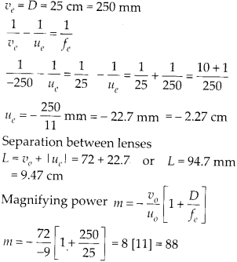
Question 13.
A small telescope has an objective lens of focal length 144 cm and an eyepiece of focal length 6.0 cm. What is the magnifying power of the telescope? What is the separation between the objective and the eyepiece?
Solution:
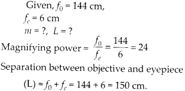
Question 14.
(a) A giant refracting telescope at an observatory has an objective lens of focal length 15 m. If an eyepiece of focal length 1.0 cm is used, what is the angular magnification of the telescope?
(b) If this telescope is used to view the moon, what is the diameter of the image of the moon formed by the objective lens? The diameter of the moon is 3.48 × 106 m and the radius of lunar orbit is 3.8 × 108 sm.
Solution:
(a) ƒo = 15 m and ƒe = 1.0 cm angular magnification by the telescope normal adjustment
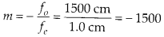
(b) The image of the moon by the objective at lens is formed on its focus only as the moon is nearly infinite distance as compared to focal length.
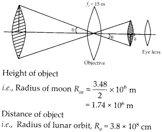
Distance of object i.e., Radius of lunar orbit, Ro = 3.8 × 108 cm Distance of image for objective lens i.e., focal length of objective lens ƒo = 15 m Radius of image of moon by objective lens can be calculated.
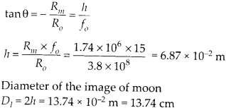
Question 15.
Use the mirror equation to deduce that:
(a) An object placed between f and 2f of a concave mirror produces a real image beyond 2 f.
(b) A convex mirror always produces a virtual image independent of the location of the object.
(c) The virtual image produced by a convex mirror is always diminished in size and is located Between the focus and the pole.
(d) An object placed between the pole and focus of a concave mirror produces a virtual and enlarged image.
Solution:
(a) We know for a concave mirror ƒ < 0 [negative] and u < 0 [negative]
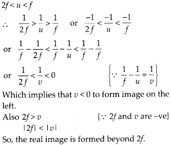
(b) For a convex mirror, ƒ > 0, always positive and object distance u < 0, always negative.
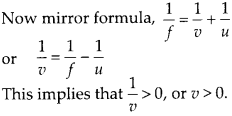
So, whatever be the value of u, a convex mirror always forms a virtual image.
(c) In convex mirror focal length is positive hence ƒ > 0 and for an object distance from mirror with negative sign (u < 0)
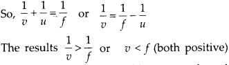
hence the image is located between pole and focus of the mirror
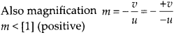
So, the image is virtual and diminished.
(d) In concave mirror, ƒ < 0 for object placed between focus and pole of concave mirror
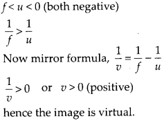
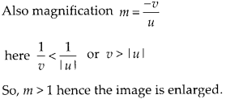
Question 16.
A small pin fixed on a table top is viewed from above from a distance of 50 cm. By what distance would the pin appear to be raised if it is viewed from the same point through a 15 cm thick glass slab held parallel to the table? Refractive index of glass = 1.5. Does the answer depend on the location of the slab?
Solution:
The shift in the image by the thick glass slab can be calculated. Here, shift only depend upon thickness of glass slab and refractive index of glass.
Shift = Real thickness – Apparent of thickness
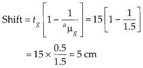
The answer does not depend on the location of the slab.
Question 17.
(a) Figure shows a cross-section of’light pipe’ made of a glass fiber of refractive index 1.68. The outer covering of the pipe is made of a material of refractive index 1.44. What is the range of the angles of the incident rays with the axis of the pipe for which total reflections inside the pipe take place, as shown in the figure.
(b) What is the answer if there is no outer covering of the pipe?
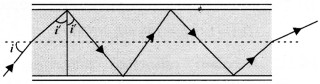
Solution:
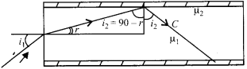
(a) Let us first derive the condition for total internal reflection. Critical angle for the interface of medium 1 and medium 2.
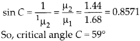
Condition for total internal reflection from core to cladding
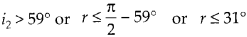
Now, for refraction at first surface air to core.
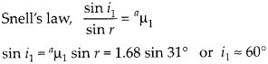
Thus all incident rays which makes angle of incidence between 0° and 60° will suffer total internal reflection in the optical fiber.
(b) When there is no outer covering critical angle from core to surface.

Thus all incident rays at first surface 0° to 90° will suffer total internal reflection inside core.
Question 18.
Answer the following questions:
(a) You have learnt that plane and convex mirrors produce virtual images of objects. Can they produce real images under some circumstances? Explain.
(b) A virtual image, we always say, cannot be caught on a screen. Yet when we’see’a virtual image, we are obviously bringing it on to the ‘screen’ (i.e., the retina) of our eye. Is there a contradiction?
(c) A diver under water, looks obliquely at a fisherman standing on the bank of a lake.
(d) Does the apparent depth of a tank of water change if viewed obliquely? if so, does the apparent depth increase of decrease?
(e) The refractive index of diamond is much greater than that of ordinary glass. is this fact of some use to a diamond cutter?
Solution:
(a) In this situation when rays are convergent behind the mirror, both plane mirror and convex mirror can form real images of virtual objects.
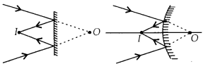
(b) Here, the retina is working as a screen, where the rays are converging, but this screen is not at the position of formed virtual image, in fact the reflected divergent rays are converged by the eye lens at retina. Thus, there is no contradiction.
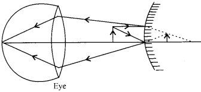
(c) An observer in denser medium will observe the fisherman taller than actual height, due to refraction from rare to denser medium.
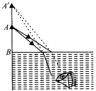
(d) Apparent depth decreases if viewed obliquely as compared to when observed near normally.
(e) As \(\mu =\frac { 1 }{ sinC }\)hence, sin \(C=\frac { 1 }{ \mu }\) refractive
index of diamond is much greater than that of ordinary glass, hence critical angle C for diamond is much smaller (24°) as compared to that of glass (42°).
A skilled diamond cutter thus can take the advantage of such large range of angle of incidence available for total internal reflection 24° to 90°. The diamond can be cut with so many faces, to ensure that light entering the diamond does multiple total internal reflections before coming out. This behavior produce brilliance i.e., sparkling effect in the diamond.
Question 19.
The image of a small electric bulb fixed on the wall of a room is to be obtained on the opposite wall 3 m away by means of a large convex lens. What is the maximum possible focal length of the lens required for the purpose?
Solution:
Let the object be placed x m in front of lens the distance of image from the lens is (3 – x) m.
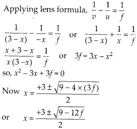
Condition for image to be obtained on the screen, i.e.m real image. 9 – 12ƒ > 0 or 9 > 12ƒ or f < 0.75 m. so, maximum focal length is 0.75 m.
Question 20.
A screen is placed 90 cm from an object. The image of the object on the screen is formed by a convex lens at two different locations separated by 20 cm. Determine the focal length of the lens.
Solution:
The image of the object can be located on the screen for two positions of convex lens such that u and v are exchanged.
The separation between two positions of the lens is x = 20 cm. It can be observed from figure.
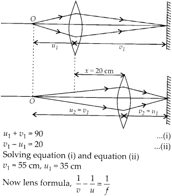
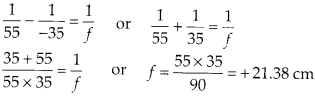
Question 21.
(a) Determine the ‘effective focal length of the combination of two lenses in question 10, if they are placed 8.0 cm apart with their principal axes coincident. Does the answer depend on which side of the combination a beam of parallel light is incident? Is the notion of effective focal length of this system useful at all?
(b) An object 1.5 cm in size is placed on the side of the convex lens in the above arrangement. The distance between the object and the convex lens is 40 cm. Determine the magnification produced by the two-lens system, and the size of the image.
Solution:
(a)
(i) Let a parallel beam of light incident first on convex lens, refraction at convex lens
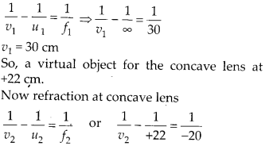
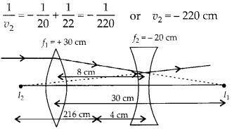
The parallel beam of light appears to diverge from a point 216 cm from the center of the two lens system.
(ii) Now let a parallel beam of light incident first on concave lens.
The image I1 will act as real object for convex lens at 28 cm.
Thus the parallel incident beam appears to diverge from a point 420 -4 = 416 cm on the left of the center of the two lens system. Hence the answer depend upon which side of the lens system the parallel beam is made incident. Therefore the effective focal length is different in two situations.
(b) Now an object of 1.5 cm size is kept 40 cm in front of convex lens in the same system of lenses.
Question 22.
At what angle should a ray of light be incident on the face of a prism of refracting angle 60° so that it just suffers total internal reflection at the other face? The refractive index of the material of the prism is 1.524.
Solution:
The beam should be incident at critical angle or more than critical angle, for total internal reflection at second surface of the prism.
Let us first find critical angle for air glass interface.
Question 23.
You are given prisms made of crown glass and flint glass with a wide variety of angles. Suggest a combination of prisms which will
(a) deviate a pencil of white light without much dispersion.
(b) disperse (and displace) a pencil of white light without much deviation.
Solution:
By using two identical shape prism of crown glass and flint glass kept with their base on opposite sides, we can observe deviation without dispersion or dispersion without deviation.
(a) Deviation without dispersion A white beam incident on crown glass will suffer deviation 6, and angular dispersion Δθ, both
Now the light beam again suffer deviation and dispersion by flint glass prism.
Negative sign shows that two prisms must be placed with their base on opposite sides. Net deviation in this condition
(b) Dispersion without deviation
Here again negative sign shows that two prisms must be placed with their base on opposite sides. Net angular dispersion
Δθ = Δθ1 + Δθ2
Δθ = A1 (μv1 – μR1) + A2 (μv2 – μR2)
Question 24.
For a normal eye, the far points at infinity and the near point of distinct vision is about 25 cm in front of the eye. The cornea of the eye provides a converging power of about 40 dioptres, and the least converging power of the eye lens behind the cornea is about 20 dioptres. From this rough data estimate the range of accommodation (i.e., the range of converging power of the eye-lens) of a normal eye.
Solution:
Here the least converging power of eye lens is given as 20 dioptres behind the cornea. If we can calculate the maximum converging power, then we can get the range of accommodation of a normal eye.
(a) To see objects at infinity, the eye uses its least converging power = 40 + 20 = 60 dioptres
∴ Approximate distance between the retina and the cornea eyelens
(b) To focus object at the near point on the retina, we have
dioptres Power of the eye lens = 64 – 40 = 24 dioptres Thus the range of accommodation of the eye lens is approximately 20 to 24 dioptres.
Question 25.
Does short-sightedness (myopia) or long¬> sightedness (hypermetropia) imply necessarily that the eye has partially lost its ability of r accommodation? If not, what might cause these defects of vision?
Solution:
A person with normal ability of accommodation may be myopic or hypermetropic due to defective eye structure, j- When the eye ball from front to back gets too elongated the myopic defect occur, similarly when the eye ball from front to back gets too shortened the hypermetropia defect occur.
When the eye ball has normal length ‘ but the eye lens loses partially its ability of accommodation, the defect is called “presbyopia” and is corrected in the same I manner as myopia or hypermetropia.
Question 26.
A myopic person has been using spectacles of power – 1.0 dioptre for distant vision. During old age, he also needs to use separate reading glass of power + 2.0 dioptres. Explain what may have happened.
Solution:
Myopic person uses spectacles of power – 1.0 dioptre or concave lens of focal length ƒ =\(\frac { 1 }{ p }\) = -100 cm in order to observe clearly object at infinity. Far point of the person can be calculated as
Similarly if the person uses spectacles of power + 2.0 dioptre then he must be using convex lens of power + 2.0 dioptre. Focal length and near point can be calculated as
Thus the person also has the defect of hypermetropia and has a near point 50 cm. So having both defects he needs different lenses for distant vision and to see closer objects.
Question 27.
A person looking at a person wearing a shirt with a pattern comprising vertical and horizontal lines is able to see the vertical lines more distinctly than the horizontal ones. What is this defect due to? How is such a defect of vision corrected?
Solution:
This defect is called astigmatism. It arises due to non spherical cornea. The eye lens is ideally spherical and has same curvature in different planes, but in an astigmatic eye due to non spherical cornea the curvature may be insufficient in different planes.
In the given situation the curvature in the vertical plane is enough, so vertical lines are visible distinctly. But the curvature is insufficient in the horizontal plane, hence horizontal lines appear blurred. The defect can be corrected by using a cylindrical lens with its axis along vertical. The parallel rays in the vertical plane will suffer no extra refraction but the parallel rays in the horizontal plane will be refracted largely and converges at the retina, according to the requirement to form the clear image of horizontal lines.
Question 28.
A man with normal near point (25 cm) reads a book with small print using a magnifying glass: a thin convex lens of focal length 5 cm.
(a) What is the closest and the farthest distance at which he should keep the lens from the page so that he can read the book when viewing through the magnifying glass?
(b) What is the maximum and the minimum angular magnification (magnifying power) possible using the above simple microscope?
Solution:
(a) At closest distance of the object the image is formed at least distance of distinct vision and eye is most strained.
At farthest distance of the object the image is formed at ∞ and eye is most relaxed.
(b) Maximum angular magnification
Question 29.
A card sheet divided into squares each of size 1 mm2 is being viewed at a distance of 9 cm through a magnifying glass (a converging lens of focal length 10 cm) held close to the eye.
(a) What is the magnification produced by the lens? How much is the area of each square in the virtual image?
(b) What is the angular magnification (magnifying power) of the lens?
(c) Is the magnification in (a) equal to the magnifying power in (b)? Explain.
Solution:
(a) For magnification by the magnifying lens.
(b) Angular magnification,
(c) No, the linear magnification by a lens and magnifying power (angular magnification) of magnifying glass have different values. The linear magnification is calculated using
image of object at eye lens ‘p’ to the angle subtended by object assumed to be at least distance at eye lens ‘a’.
The linear magnification and angular magnification in microscope have similar magnitude when image is at least distance of distinct vision i.e., 25 cm.
Question 30.
(a) At what distance should the lens be held from the figure in previous question in order to view the squares distinctly with the maximum possible magnifying power?
(b) What is the magnification in this case?
(c) Is the magnification equal to the magnifying power in this case? Explain.
Solution:
(a) For maximum magnifying power the image should be at least distance of distinct 1 vision i.e., 25 cm.
(b) Linear magnification in the situation of maximum magnifying power.
(c) Maximum magnifying power in the same situation
So, it can be observed that in the situation when image is least distance of distinct vision the angular magnification and linear magnification have similar values.
Question 31.
What should be the distance between the object in previous question and the magnifying glass if the virtual image of each square in the figure is to have an area of 6.25 mm2. Would you be able to see the squares distinctly with your eyes very close to the magnifier?
Solution:
Now we want the area of square shaped virtual image as 6.25 mm2. So, each side of image is I = \(\sqrt { 6.25 }\) = 2.5 mm (Linear magnification) For the given magnifying lens of focal length 10 cm we can calculate the required position of object.
Thus the required virtual image is closer than normal near point. Thus the eye cannot observe the image distinctly.
Question 32.
Answer the following question:
(a) The angle subtended at the eye by an object is equal to the angle subtended at the eye by the virtual image produced by a magnifying glass. In what sense then does a magnifying glass provide angular magnification?
(b) In viewing through a magnifying glass, one usually positions one’s eyes very close to the lens. Does angular magnification change if the eye is moved back?
(c) Magnifying power of a simple microscope is inversely proportional to the focal length of the lens. What then stops us from using a convex lens of smaller and smaller focal length and achieving greater and greater magnifying power?
(d) Why must both the objective and the eyepiece of a compound microscope have short focal lengths?
(e) When viewing through a compound microscope, our eyes should be positioned not on the eyepiece but a short distance away from it for best viewing. Why? How much should be that short distance between the eye and eyepiece?
Solution:
(a) In magnifying glass the object is placed closer than 25 cm, which produces image at 25 cm. This closer object has larger angular size than the same object at 25 cm. In this way although the angle subtended by virtual image and object is same at eye but angular magnification is achieved.
(b) On moving the eye backward away from lens the angular magnification decreases slightly, as both the angle subtended by the
image at eye ‘a’ and by the object at eye ‘α’ decreases. Although the decrease in angle subtended by object a is relatively smaller.
(c) If we decrease focal length, the lens has to be thick with smaller radius of curvature. In a thick lens both the spherical aberrations and chromatic aberrations become pronounced. Further, grinding for small focal length is not easy. Practically we can not get magnifying power more than 3 with a simple convex lens.
(d) Magnifying power of a compound microscope is given by
(e) If we place our eye too close to the eyepiece, we shall not collect much of the light and also reduce our field of view. When we position our eye slightly away and the area of the pupil of our eye is greater, our eye will collect all the light refracted by the objective, and a clear image is observed by the eye.
Question 33.
An angular magnification (magnifying power) of 30 X is desired using an objective of focal length 1.25 cm and an eyepiece of focal length 5 cm. How will you set up the compound microscope?
Solution:
Here we want the distance between given objective and eye lens for the required magnification of 30. Let the final image is formed at least distance of distinct vision for eyepiece.
Question 34.
A small telescope has an objective lens of focal length 140 cm and an eyepiece of focal length 5.0 cm. What is the magnifying power of the telescope for viewing distant objects when:
(a) the telescope is in normal adjustment (i.e., when the final image is at infinity)?
(b) the final image is formed at the least distance of distinct vision (25 cm)?
Solution:
(a) In normal adjustment magnifying power
(b) For the image at least distance of distinct vision
Question 35.
(a) For the telescope described in previous question 34 (a), what is the separation between the objective and the eyepiece?
(b) If this telescope is used to view a 100 m tall tower 3 km away. What is the height of the image of the tower formed by the objective lens?
(c) What is the height of the final image of the tower if it is formed at 25 cm?
Solution:
(a) The separation between objective lens and the eyepiece can be calculated in both the conditions of most relaxed eye and most strained eye. Most relaxed eye L= ƒ0 + ƒe= 140 + 5 = 145 cm
Most strained eye object distance ‘ue‘ for eye lens
(b)
(c) Now we want to find the height of final image A”B” assuming it to be formed at 25 cm.
Question 36.
A Cassegrain telescope uses two mirrors as shown in figure. Such a telescope is built with the mirrors 20 mm apart. If the radius of curvature of the large mirror is 220 mm and the small mirror is 140 mm, where will the final image of an object at infinity be?
Solution:
Image formed by concave mirror acts as a virtual object for convex mirror. Here parallel rays coming from infinity will focus at 110 mm an axis away from concave mirror. Distance of virtual object for convex mirror
Hence image is formed at 315 mm from convex mirror.
Question 37.
Light incident normally on a plane mirror attached to a galvanometer coil retraces backwards as shown in figure. A current in the coil produces a deflection of 3.5° of the mirror. What is the displacement of the reflected spot of light on a screen placed 1.5 m away?
Solution:
If the mirror deflect by 3.5°, the reflected light deflect by 7°, deflection of the spot d can be calculated.
Question 38.
Figure shows an equiconvex lens (of refractive index 1.50) in contact with a liquid layer on top of a plane mirror. A small needle with its tip on the principal axis is moved along the axis until its inverted image is found at the position of the needle. The distance of the needle from the lens is measured to be 45.0 cm. The liquid is removed and the experiment is repeated. The new distance is measured to be 30.0 cm. What is the refractive index of the liquid?
Solution:
Let us first consider the situation when there is no liquid between lens and plane mirror and the image is formed at 30 cm i.e., at the position of object. As the image is formed on the object position itself, the object must be placed at focus of Biconvex lens.

ƒ0 = 30 cm Radius of curvature of convex lens can be calculated
Now a liquid is filled between lens and plane mirror and the image is formed at position of object at 45 cm. The image is formed on the position of object itself, the object must be placed at focus of equivalent lens of Biconvex of glass and Plano convex lens of liquid

We hope the NCERT Solutions for Class 12 Physics Chapter 9 Ray Optics and Optical Instruments help you. If you have any query regarding NCERT Solutions for Class 12 Physics Chapter 9 Ray Optics and Optical Instruments, drop a comment below and we will get back to you at the earliest.